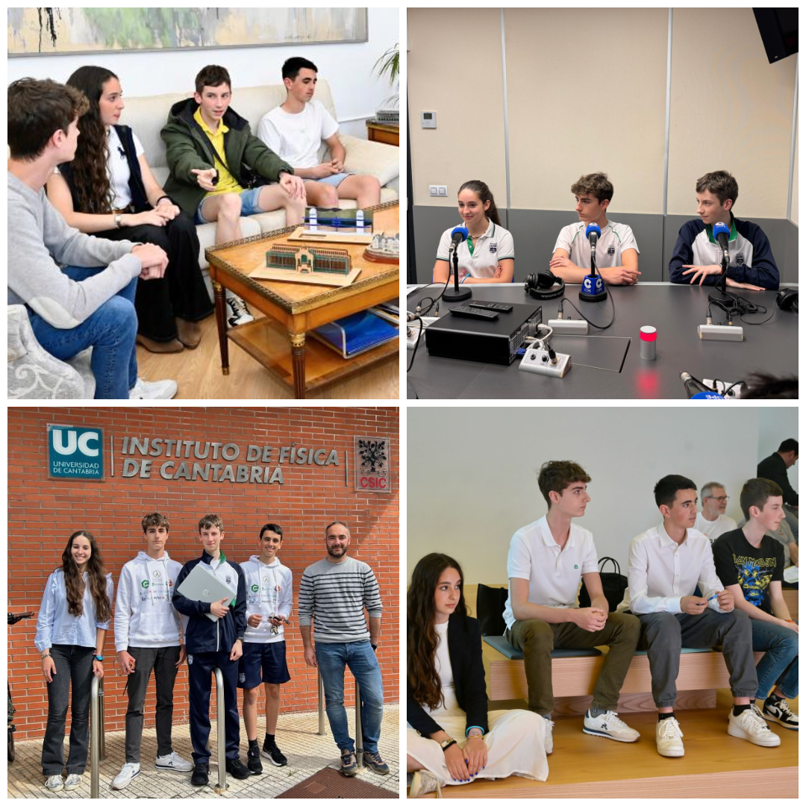
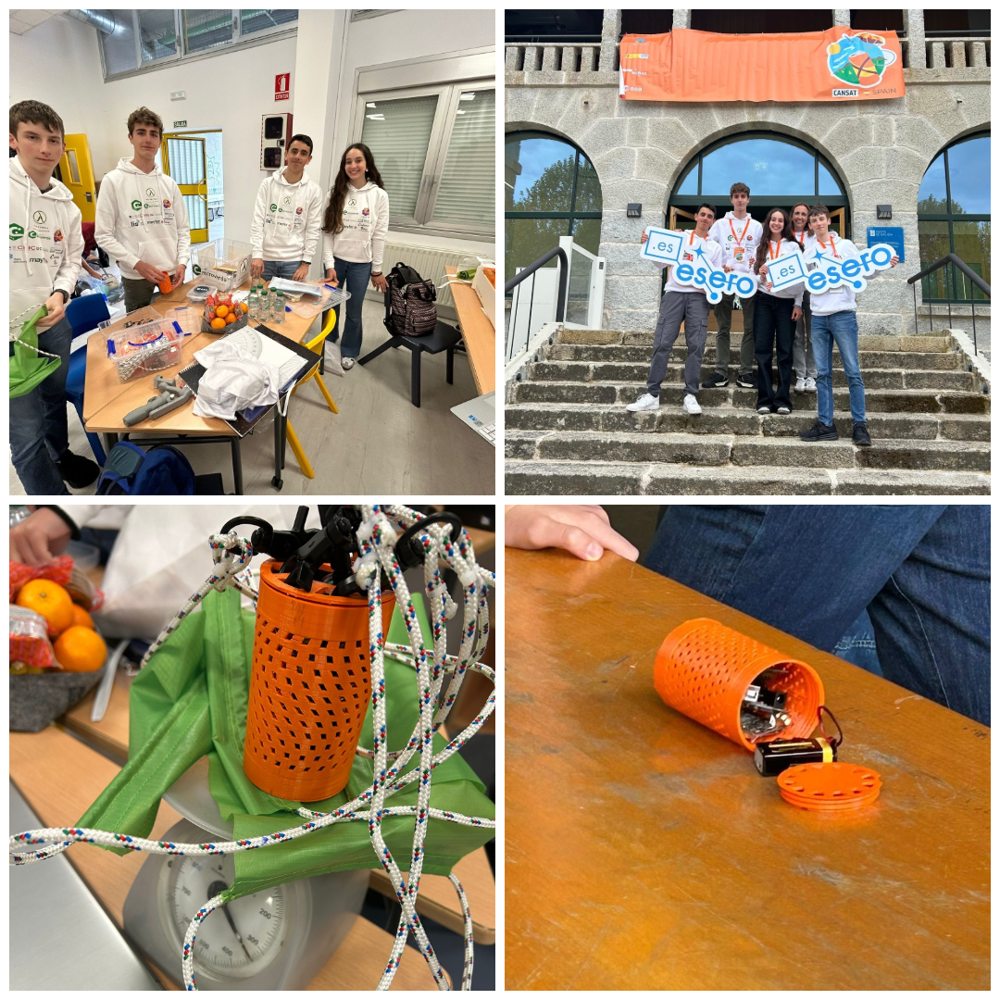
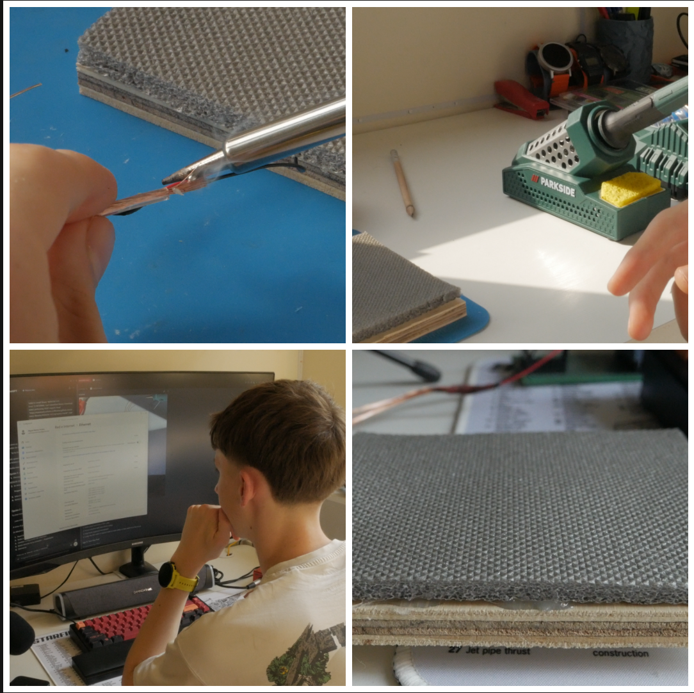
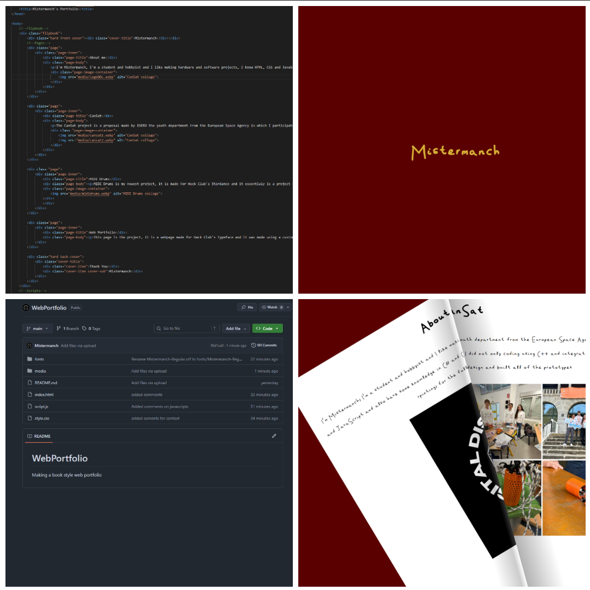

I'm Mistermanch, I'm a student and hobbyist and I like making hardware and software projects, I know HTML, CSS and JavaScript and also have some knowledge in C# and C++. Finally I know basic circuit design, soldering, and 3d rpinting, for the full list head to my GitHub
The CanSat project is a proposal made by ESERO the youth department from the European Space Agency in which I participated with a team from my school, in this project I did not only coding using C++ and integrating wireless LoRa communication but also did circuit design and built all of the prototypes


MIDI Drums is my newest project, it is made for Hack Club's Stardance and it essentialy is a project in which I use piezo sensors and an arduino r4 to make a functional MIDI drumset, in this project I worked soldering circuits, programing in C++ and working with various serial to MIDI tools

This page is the project, it is a webpage made for Hack Club's Typeface and it was made using a custom font and using HTML, CSS, JavaScript and the Turn.js library for the book like effect
